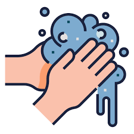
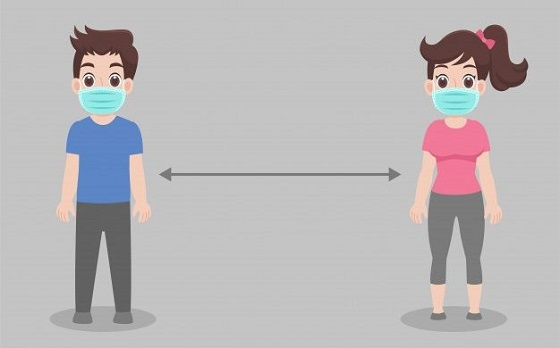
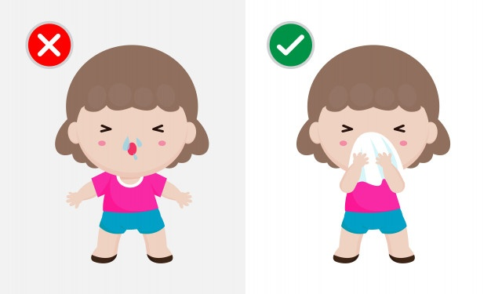
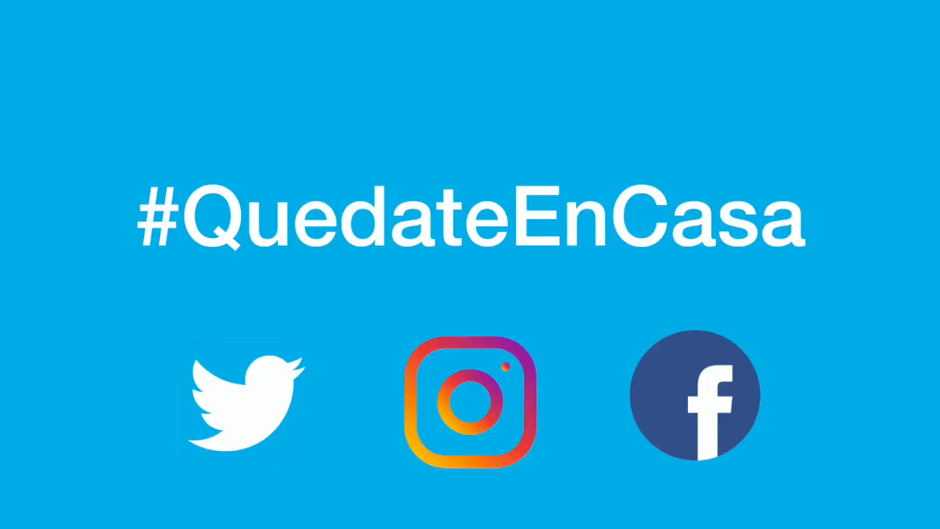

1.-Lávate las manos con frecuencia. Usa agua y jabón o un desinfectante de manos a base de alcohol.

2.-Mantén una distancia de seguridad con personas que tosan o estornuden.

3.-Utiliza mascarilla cuando no sea posible mantener el distanciamiento físico.

4.-No te toques los ojos, la nariz ni la boca.
5.-Cuando tosas o estornudes, cúbrete la nariz y la boca con el codo flexionado o con un pañuelo.

6.-Si no te encuentras bien, quédate en casa.

7.-En caso de que tengas fiebre, tos o dificultad para respirar, busca atención médica.